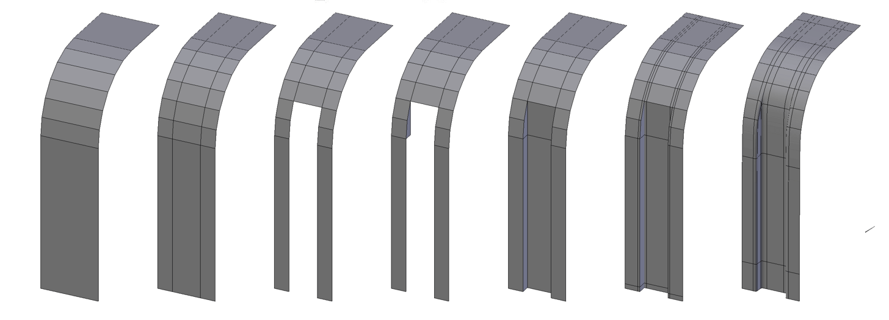

Modeling Grip Ridges
This shape is pretty simple. but a useful one if your modeling mechanical or sci-fi things with grips or ridges. So let’s get to it!
1.
Start by modeling the curved edge you need to incorporate the ridges into. I recommend modeling separate to your main model so that you can tile it later and then add it back in.
2.
Add two loops to define the inset and outset parts. If you want the inset and outset ridges to be the same width, then make sure the middle section is the same width as the two outer sections combined.
3.
Cut out the area you’d like to be inset.
4.
Add a quad to the first four vertices along what will be the wall of the inset. Make sure to model this quad to be properly aligned how you
like it, as the rest of the inset will be based upon this quad.
5.
Fill in the rest of the inset using the fill tool (F key), or using the F2 add-on for Blender to make it even quicker.
6.
Add holding edges or mean creases to hold the shape, then apply sub-surf. At this point, you can easily tile the ridges using an array and reintegrate it into your mesh.
 See the final result on Sketchfab: